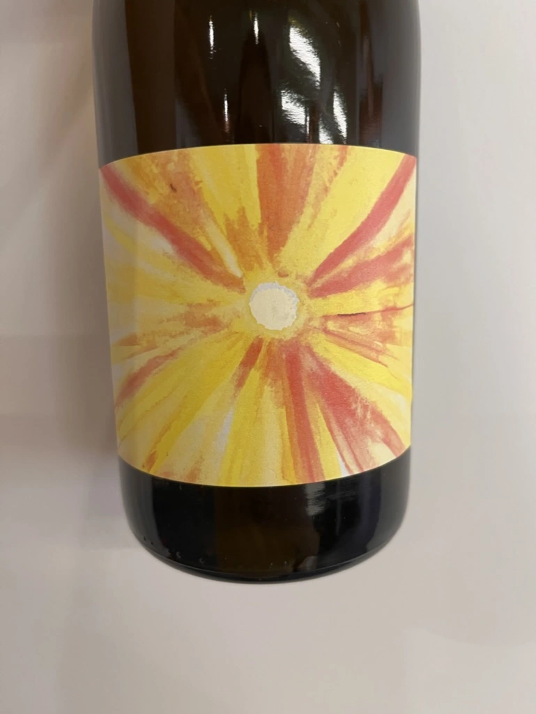
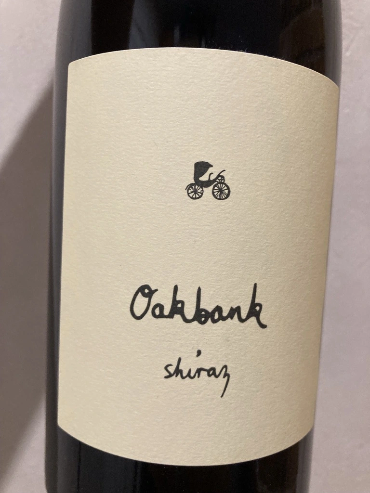
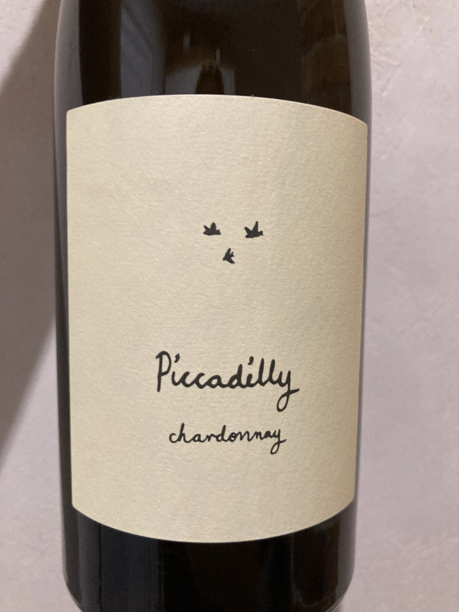
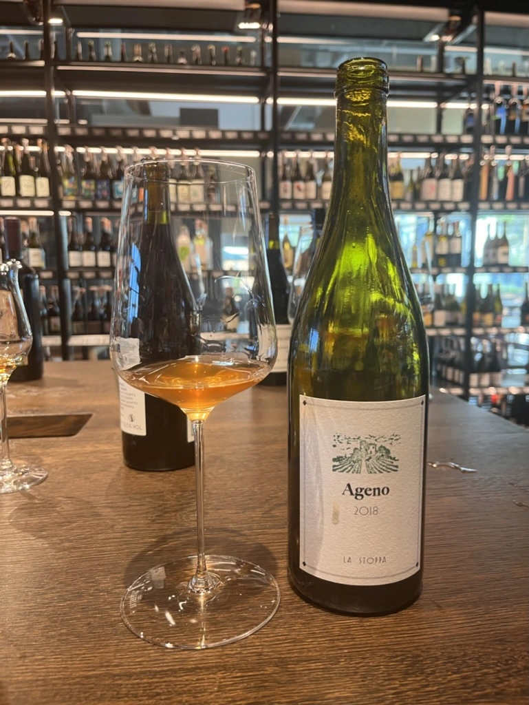
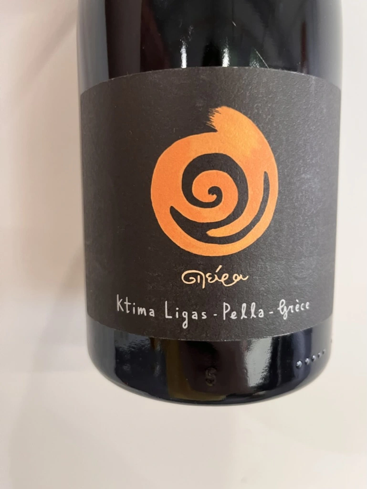
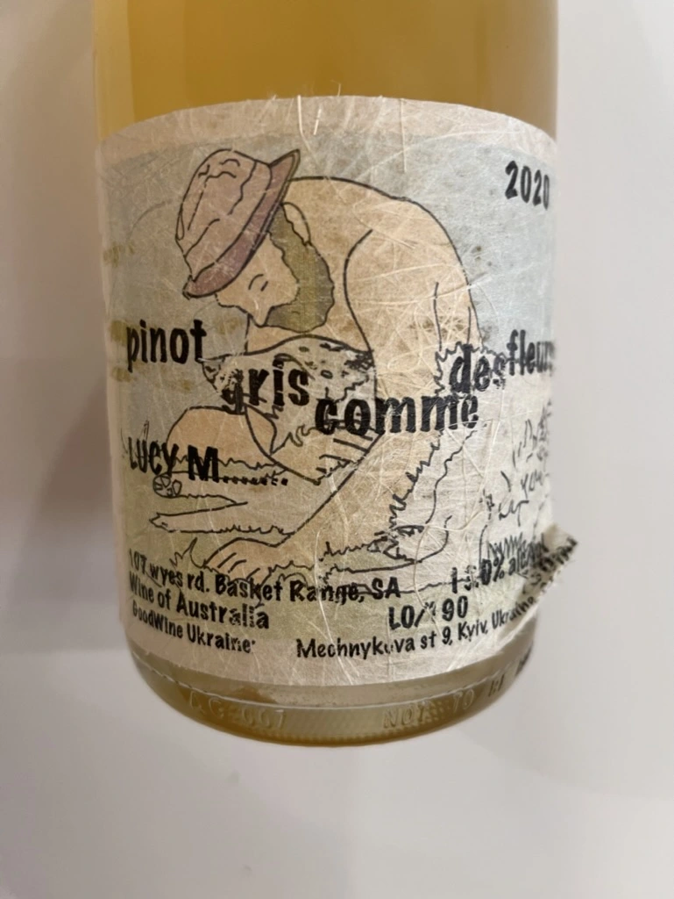
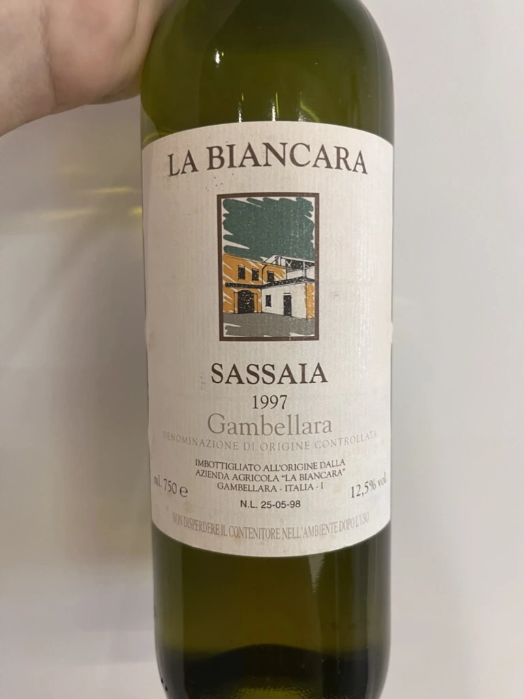
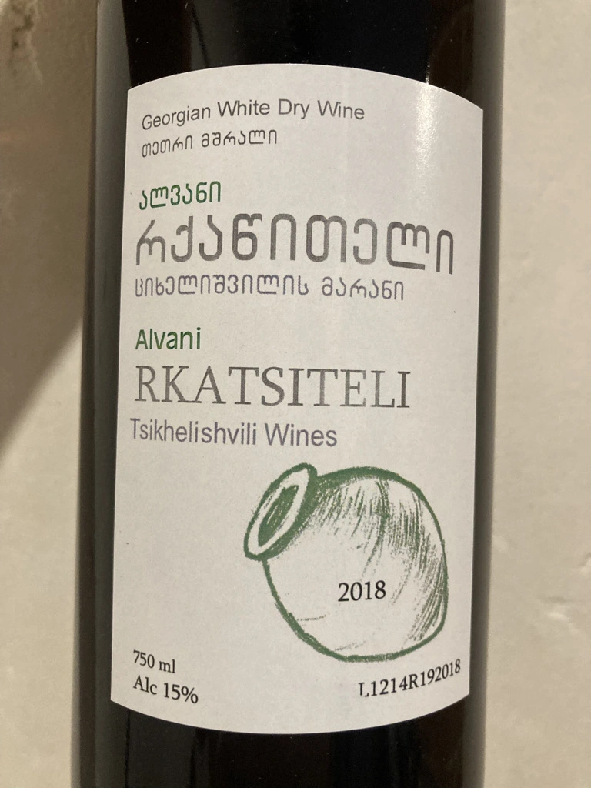

- Type
- White Still, Dry
- Producer
- Gentle Folk
- Vintage
- 2019
- Location
- Australia, Adelaide Hills
- Grapes
- Sauvignon Blanc
- Alcohol
- 13
- Sugar
- 2
- Price
- 1232 UAH
- Cellar
- N/A
It is, as Gareth says, the sort of Sauvignon you can make if you have good grapes and a mentality to make something more than vegetal juice.
Ratings
2022-07-28 - 8.50
From now on, it’s my guilty pleasure. Fascinating macerated Sauvignon Blanc from Adelaide Hills. Simple and sophisticated at the same time. As easy as Dirol gum with watermelon flavour. No, I am serious, watermelon, pumpkin seeds, some tropical fruits, herbs, and grass. Fresh with good volume and persistence. The only thing… I took the last bottle available in Ukraine.
Wine #7 on Mixed Bag Vol. 2: Orange.
Related








